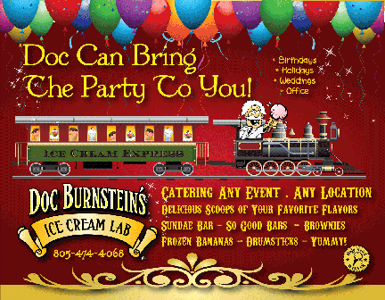
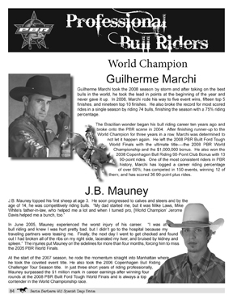
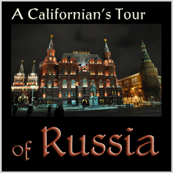
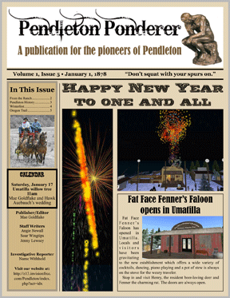

HOME ~ ABOUT US ~ GRAPHIC DESIGN ~ PHOTOGRAPHY ~ BLOGS
Winner ~ Arroyo Grande Harvest Festival Logo Contest
Avila's Sea Center Museum logo contest entry
Avila's Sea Center Museum logo contest entry
 Avila's Sea Center Museum logo contest entry
Avila's Sea Center Museum logo contest entry
 Avila's Sea Center Museum logo contest entry
Avila's Sea Center Museum logo contest entry
SLO Bike Month Contest Entry

Doc Burnstein's Ice Cream Lab
Noor Clinic
Brochure for Fiesta 2011

Logo and Fiesta program 2005 - 11

2011 Rodeo Program
Kalyra Winery's quarterly newsletters.

Travel book now on sale at Amazon.com. View more photos with the "Blog" tab.

Newsletter for an online game

CD Cover for Tales from the Tavern

Cruzin Cooler ~ Photography, Business Card & Brochure


©2011 Design Group, Ink.